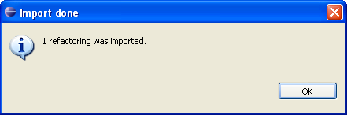

Importing RefactoringsImporting Refactorings
Importing RefactoringsImporting RefactoringsIn this section you will learn how to import existing dynamic refactorings into your Eclipse installation with the Dynamic Refactoring Plugin.
Inside Eclipse select the menu item Dynamic Refactoring > Import Refactoring... to open the Import Dynamic Refactoring dialog.
(...) button and select the folder you want to import the
refactoring files from.
The plugin will perform a recursive search within the given directory looking for valid refactoring files.
If you want the search to be fast, select the exact folder where the refactorings are located. If the
Recursive check box is selected, the plugin will recurisvely search within the directories contained
in the folder you selected. This could be a long-running operation for deep folders, so be sure to uncheck
this option if you don't want the search to be recursive.
Select the refactorings you would like to import.
You can now find the new refactorings within any of the Dynamic Refactoring Plugin options.

Confirmation